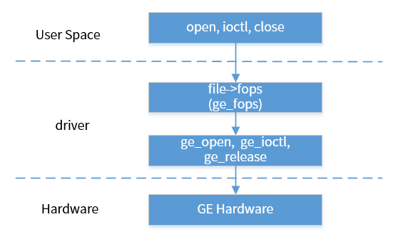
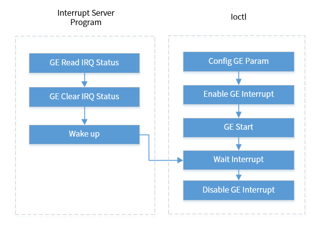

非命令队列模式
4 Dec 2024
Read time: 1 minute(s)
非命令队列模式，即 normal 模式。
GE normal 模式的控制流程如下所示：
- 当用户态通过 open 函数打开 /dev/ge 设备节点，会调用到驱动中的 open。
- 当用户通过 close 关闭驱动时，会调用到驱动中的 release。
- 在 open 中主要是实现了模块 clock 的打开操作， 在 release 中实现了模块 clock 的关闭操作。
- 当用户态有多个用户打开 GE 驱动时，对驱动打开次数进行引用计数。
- 至少有一个用户打开 GE 驱动时打开 GE 的 clock。
- 当所有的用户都关闭 GE 驱动时关闭 GE 的 clock。

在 Normal 模式下，用户态可用 ioctl 控制 GE，包括以下几种操作：
-
IOC_GE_VERSION
-
IOC_GE_MODE
-
IOC_GE_FILLRECT
-
IOC_GE_BITBLT
-
IOC_GE_ROTATE
在 normal 模式下，对 IOC_GE_FILLRECT、IOC_GE_BITBLT、IOC_GE_ROTATE 接口的调用是同步的，即硬件执行任务完成后接口调用才会返回。
GE 控制函数
-
函数 ge_open：打开 GE
static int ge_open(struct inode *inode, struct file *file) { mutex_lock(&g_data->lock); if (g_data->refs == 0) { ge_clk_enable(g_data); } g_data->refs++; mutex_unlock(&g_data->lock); return nonseekable_open(inode, file); } -
函数 ge_release：关闭 GE
static int ge_release(struct inode *inode, struct file *file) { mutex_lock(&g_data->lock); if (g_data->refs == 1) { ge_clk_disable(g_data); } g_data->refs--; mutex_unlock(&g_data->lock); return 0; }
关键流程设计
在 GE normal 模式下，GE 驱动各种功能通过 ioctrl 调用实现。
每一次 ioctrl 的调用，都包括以下步骤：
- GE 参数配置。
- GE 模块中断开启。
- GE 硬件启动。
- GE 等待中断，当前线程进入等待状态，直到收到中断通知。
- 硬件完成任务后，关闭中断。
ioctrl 通过 mutex 保护， 确保多线程环境下的安全性。在 normal 模式下，支持多用户同时打开驱动设备节点，并调用 ioctrl。

等待中断流程：
-
在执行 probe 时初始化等待队列：init_waitqueue_head(&data->wait)。
-
在 ioctl 中调用如下函数，使当前进程在等待队列中睡眠：
wait_event_timeout(data->wait, data->status, msecs_to_jiffies(GE_TIMEOUT_MS))。
-
在中断服务程序中调用 wake_up(&data->wait)，唤醒等待队列中的睡眠进程。